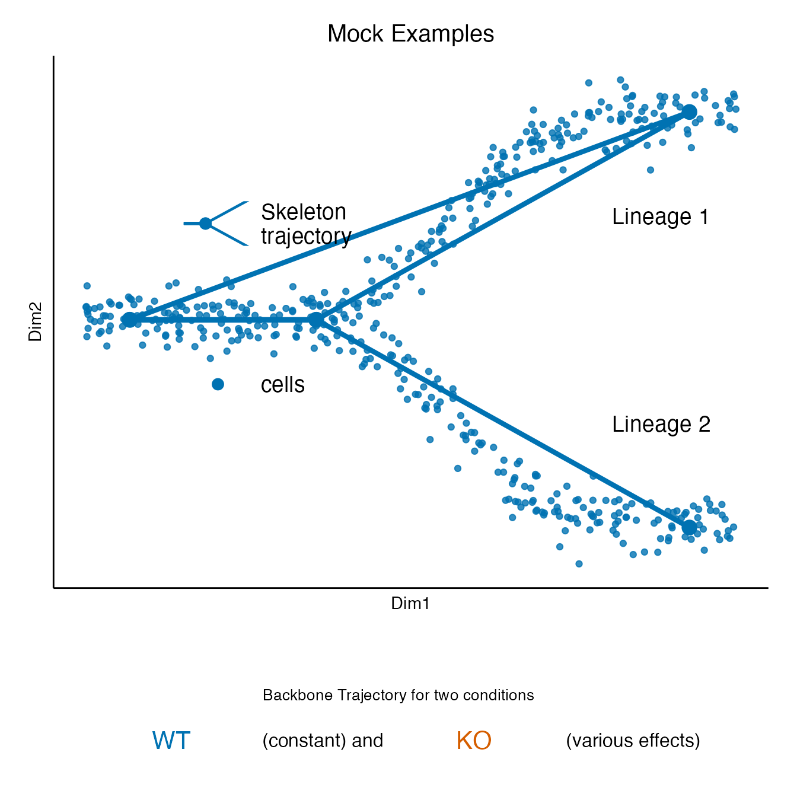
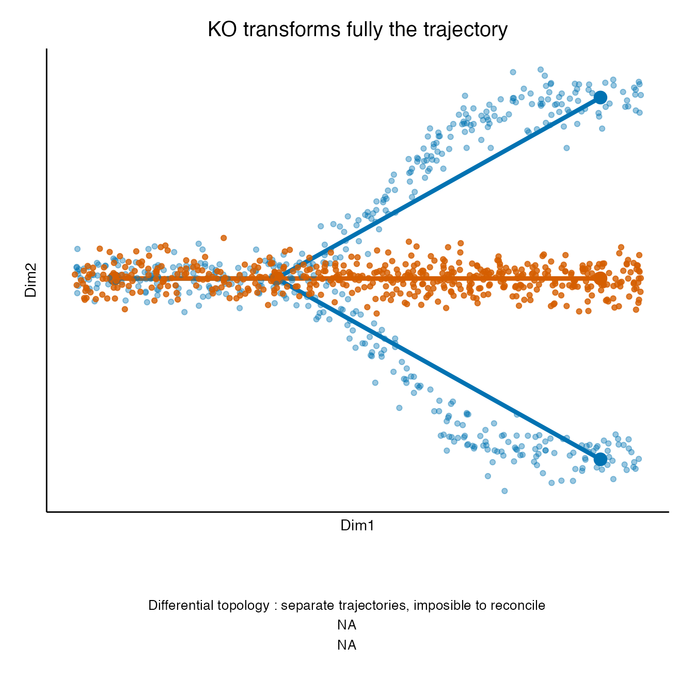

Figure 1: examples
Hector Roux de Bézieux
Examples.Rmd
libs <- c("dplyr","tidyr", "ggplot2", "condiments", "cowplot", "condimentsPaper")
suppressMessages(
suppressWarnings(sapply(libs, require, character.only = TRUE))
)## dplyr tidyr ggplot2 condiments cowplot
## TRUE TRUE TRUE TRUE TRUE
## condimentsPaper
## TRUEBackbone
sd <- create_differential_topology(n_cells = 1000, unbalance_level = .5,
shift = 0, speed = 1)
mst_wt <- sd$mst %>% filter(conditions == "A")
sd_wt <- sd$sd %>% filter(conditions == "A")
draw_key_traj <- function(data, params, size) {
leg_key <- ggplot(mapping = aes(x = Dim1, y = Dim2)) +
geom_path(data = mst_wt %>% filter(Dim2 >= 0), size = .8, col = "#0072B2") +
geom_path(data = mst_wt %>% filter(Dim2 <= 0), size = .8, col = "#0072B2") +
geom_point(data = mst_wt, size = 3, col = "#0072B2") +
theme_void() +
coord_cartesian(xlim = c(-18, -8), ylim = c(-.3, .3))
return(cowplot::as_grob(leg_key))
}
p0 <- ggplot(sd_wt, aes(x = Dim1, y = Dim2)) +
theme_classic() +
geom_path(data = mst_wt %>% filter(Dim2 >= 0), size = 1.5, col = "#0072B2") +
geom_path(data = mst_wt %>% filter(Dim2 <= 0), size = 1.5, col = "#0072B2") +
geom_point(alpha = .8, aes(col = conditions)) +
geom_point(data = mst_wt, size = 4, col = "#0072B2",
aes(fill = conditions), key_glyph = draw_key_traj) +
labs(col = "", fill = "") +
scale_color_manual(values = "#0072B2", labels = "cells") +
scale_fill_manual(values = "#0072B2",
labels = "Skeleton\ntrajectory") +
guides(fill = guide_legend(keywidth = unit(.6, "in"), order = 10),
col = guide_legend(keywidth = unit(.6, "in"),
override.aes = list(alpha = 1, size = 3))) +
theme(legend.position = c(.3, .6),
axis.text = element_blank(),
axis.ticks = element_blank(),
legend.spacing.y = unit(.4, "in"),
legend.background = element_blank(),
legend.text = element_text(size = 14),
plot.title = element_text(hjust = .5, size = 15)) +
ggtitle("Mock Examples") +
annotate("text", x = 22, y = 1, label = "Lineage 1", size = 5) +
annotate("text", x = 22, y = -1, label = "Lineage 2", size = 5) +
NULL
t0 <- ggdraw() +
draw_text(text = "Backbone Trajectory for two conditions",
x = .5, y = .65, size = 10) +
draw_text("WT", color = colors[1], size = 16, x = .2, y = .35) +
draw_text("(constant) and", color = "black", size = 12, x = .4, y = .35) +
draw_text("KO", color = colors[2], size = 16, x = .6, y = .35) +
draw_text("(various effects)", color = "black", size = 12, x = .81, y = .35) +
NULL
plot_grid(p0, t0, ncol = 1, rel_heights = c(4, 1), scale = .95)
Null
sd1 <- create_differential_topology(n_cells = 1000, shift = 0,
unbalance_level = .5)
mst_ko <- sd1$mst %>% filter(conditions == "B")
p1 <- plot_example(sd1$sd, mst_ko, sd_wt, mst_wt, "KO has no effect", colors)
t1 <- ggdraw() +
draw_text(text = paste0("No differential topology : common trajectory\n",
"No differential progression\n",
"No differentatial differentation"),
x = .5, y = .5, size = 10)
plot_grid(p1, t1, ncol = 1, rel_heights = c(4, 1), scale = .95)Differential topology
sd2 <- create_differential_topology(n_cells = 1000, shift = 10,
unbalance_level = .5)
mst_ko <- sd2$mst %>% filter(conditions == "B")
p2 <- plot_example(sd2$sd, mst_ko, sd_wt, mst_wt, "KO changes Lineage 1", colors)
t2 <- ggdraw() +
draw_text(text = paste0("Differential topology : separate trajectory, common skeleton\n",
"No differential progression\nNo differential differentation"),
x = .5, y = .5, size = 10)
plot_grid(p2, t2, ncol = 1, rel_heights = c(4, 1), scale = .95)Differential progression
sd3 <- create_differential_topology(n_cells = 1000, unbalance_level = .9,
shift = 0)
mst_ko <- sd3$mst %>% filter(conditions == "B")
p3 <- plot_example(sd3$sd, mst_ko, sd_wt, mst_wt,
"KO blocks differentation in lineage 2", colors)
t3 <- ggdraw() +
draw_text(text = paste0("No differential topology : common trajectory\n",
"Differential progression in Lineage 2\n",
"Differentatial differentation"),
x = .5, y = .5, size = 10)
plot_grid(p3, t3, ncol = 1, rel_heights = c(4, 1), scale = .95)
Differential progression
sd4 <- create_differential_topology(n_cells = 1000, unbalance_level = .5,
shift = 0, speed = 20)
mst_ko <- sd4$mst %>% filter(conditions == "B")
p4 <- plot_example(sd4$sd, mst_ko, sd_wt, mst_wt,
"KO increases developmental speed", colors)
t4 <- ggdraw() +
draw_text(text = paste0("No differential topology : common trajectory\n",
"Differential progression in both lineages\n",
"Some differentatial differentation because of speed-up"),
x = .5, y = .5, size = 10)
plot_grid(p4, t4, ncol = 1, rel_heights = c(4, 1), scale = .95)Fully different
sd5 <- create_differential_topology(n_cells = 1000, unbalance_level = .5,
shift = 0, speed = 1)
sd5$sd$Dim2 <- rnorm(n = nrow(sd5$sd), mean = 0, sd = .15)
mst_ko <- sd5$mst %>% filter(conditions == "B") %>%
mutate(Dim2 = 0)
p5 <- plot_example(sd5$sd, mst_ko, sd_wt, mst_wt,
"KO transforms fully the trajectory", colors)
t5 <- ggdraw() +
draw_text(text = paste0("Differential topology : separate trajectories, imposible to reconcile\n",
"NA\nNA"),
x = .5, y = .5, size = 10)
plot_grid(p5, t5, ncol = 1, rel_heights = c(4, 1), scale = .95)